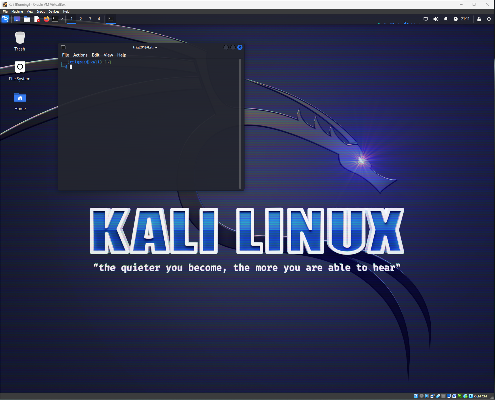
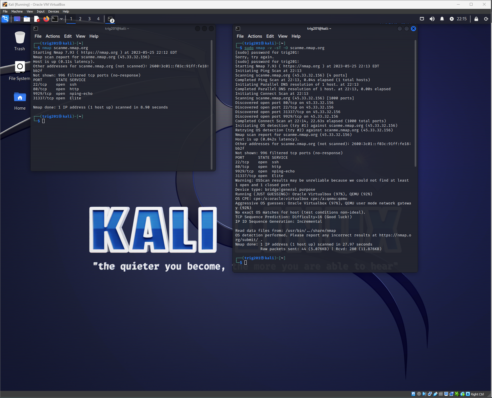

On this page is where I will be showing every project I do as I slowly get better and better.
The catch 22 of Cyber Security is you need knowledge to get the job, you need hands-on to get the knowledge.
Day by day I see myself accomplishing more and more, I'm only scratching the surface.


Nmap (Network Mapper) is one of the most common tools used among hackers and system administrators. It is used to scan a host, which can be a server, pc, network, etc. When running an Nmap scan, the goal is usually to discover various pieces of information about a target system or network. Examples of such information include: the devices that are connected to a network, the ports that are open on a device, the services that are running on these ports, whether the device is up, and whether there is a firewall protecting the device, among others.